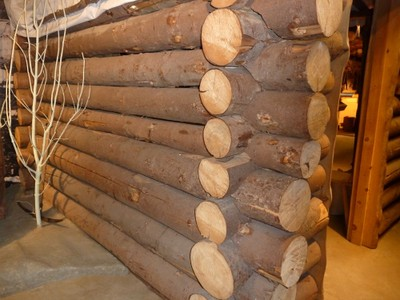

Los muros son echos de madera sólida. Incluye construcciones de madera con o sin labrar.

Detalle de construcción en madera, USA (S. Brzev)
Construcción de madera sólida, Canada (S. Brzev)
Construcción de madera, USA (S. Brzev)